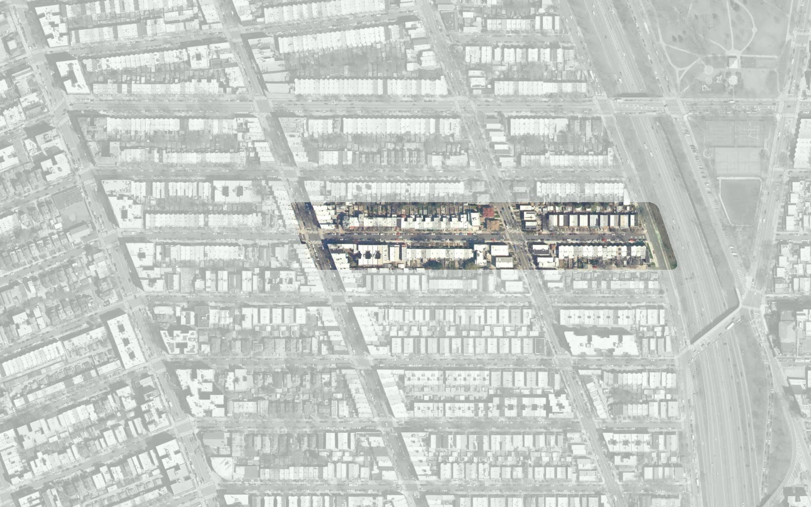
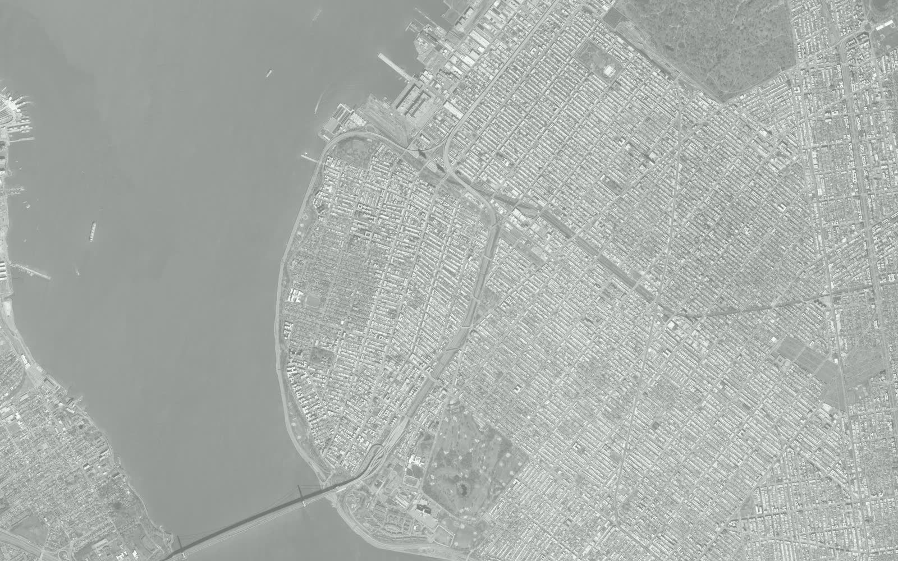
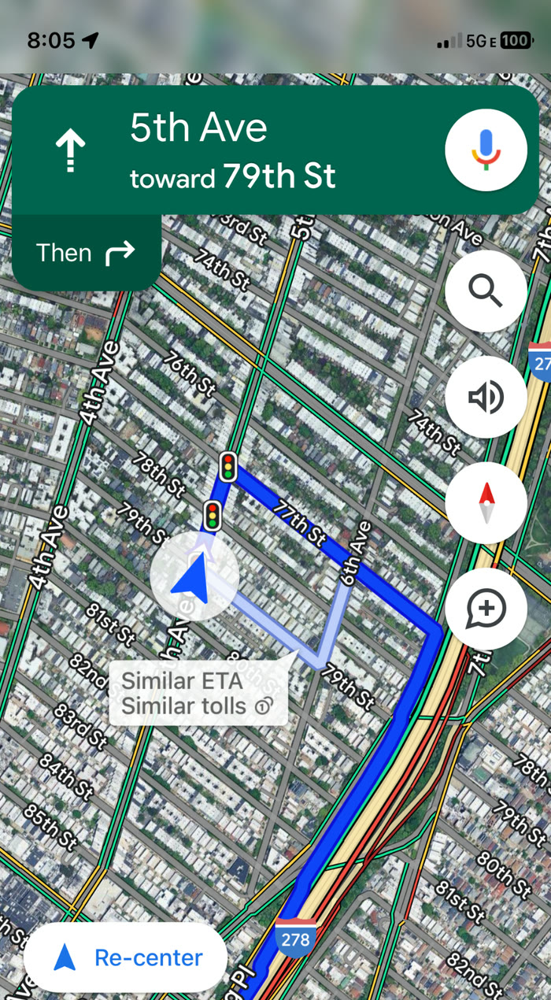
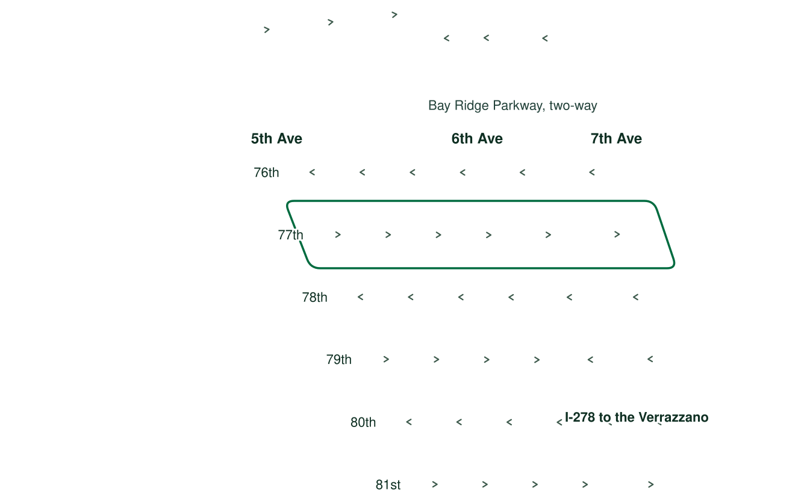
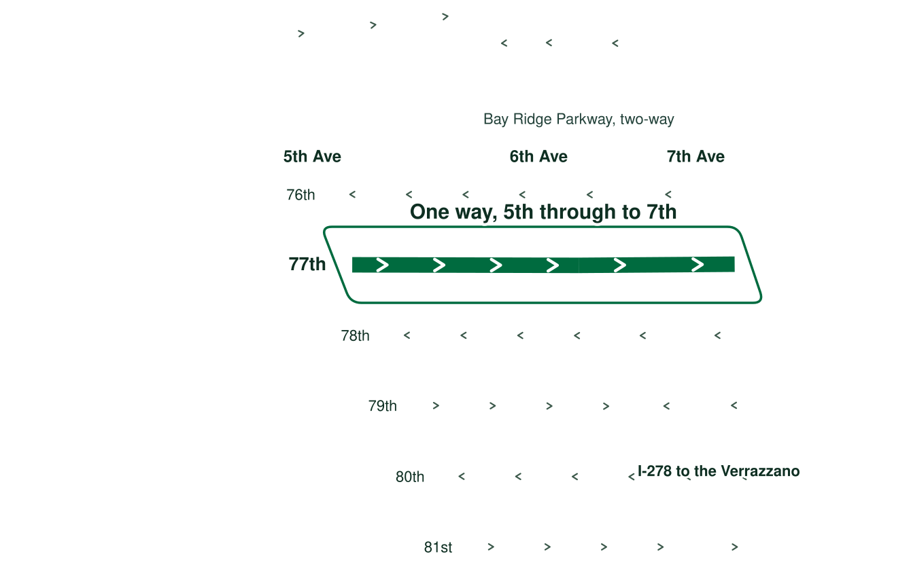
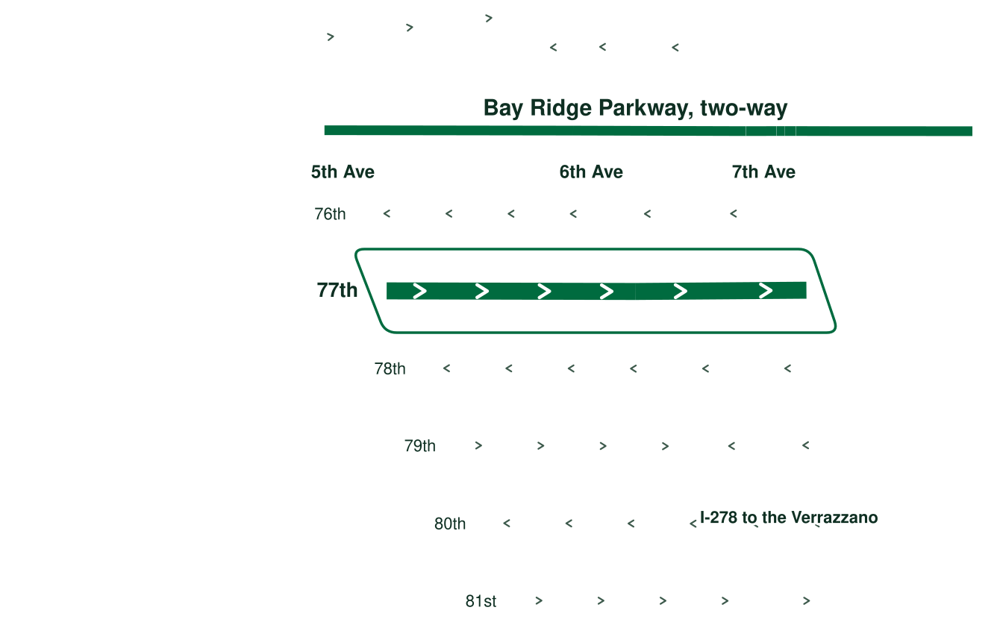

Bay Ridge, Brooklyn. Working draft, 5 November 2026.
Summary
Two blocks of families in Bay Ridge
We are the families on 77th Street between 5th and 7th Avenues. Drivers speed down our two blocks and trucks cut through them, on the way to the Verrazzano.1 We want the City to stop the shortcut and make these blocks safer for the people who live here.
Saturday 7 June 2025, 7:02 pm. Our row houses and street trees.7
At least 20 children live on these two blocks.1 They draw on the sidewalk and kick a ball in the street. Little Sprouts Bay Ridge Day Care operates on our block.1 Six more schools and child care programs are within a quarter mile, and the nearest, P.S. 127, is about 700 feet away.8
Tuesday 22 April 2025, 5:23 pm. Children run along the sidewalk, seen from a front window.7
Shortcut
The route to the Verrazzano






We live on two blocks in Bay Ridge, Brooklyn, close to the approach to the Verrazzano.9
8:05 in the morning
This navigation app routes a driver to the Verrazzano down 77th Street.1 The alternative has a similar arrival time and uses our block too.
The one-way directions explain why drivers end up here: most of these streets don't connect 5th Avenue to the highway.
Between Bay Ridge Parkway and 80th Street, only ours runs one way from 5th through to 7th.2
Bay Ridge Parkway, two blocks north, is 50 feet wide and runs both ways.2 Ours is 30 feet with one lane.
Evidence
What we see on our block
Trucks
The sign on our block reads "No trucks except local deliveries,"7 and 77th Street is not on the City's truck route map.10 311 logged 9 truck route complaints from December 2022 to May 2025, and police issued 1 summons.5
Three trucks in 13 minutes. Police closed the first complaint at 1:00 pm, saying those responsible were gone. That same minute, a third truck came down the block.
A second truck, in the same spot. 311 logs two complaints, at 12:51 and 12:53.
1:00
A third truck, as police close the first complaint. They close the second at 1:01, also as gone.
Tuesday 27 June 2023. Times come from the photos and the 311 record.57Every truck complaint, with what police said
Filed
Closed after
NYPD's stated result
8 December 2022, 10:04 pm
2 min
Police action not necessary
11 January 2023, 12:38 pm
1 hr 13 min
No evidence of the violation
27 June 2023, 12:51 pm
9 min
Gone when police arrived
27 June 2023, 12:53 pm
8 min
Gone when police arrived
11 November 2023, 12:03 pm
1 hr 48 min
No evidence of the violation
16 February 2024, 9:42 am
1 hr 20 min
Gone when police arrived
29 April 2025, 8:59 pm
6 hr 1 min
Summons issued
4 May 2025, 6:18 pm
46 min
No evidence of the violation
10 May 2025, 7:58 am
1 hr 27 min
Gone when police arrived
Complaints
Since 2010, 311 has logged 77 complaints about driving and vehicles blocking these two blocks.5 Police issued 6 summonses, and in 21 cases those responsible were gone when police arrived. Cars blocking hydrants and driveways account for another 356 complaints and 120 summonses.
Every 311 complaint about driving or blocking on the two blocks since 2010, from all callers.5
Complaint
Filed
Summons
Gone on arrival
Double parked, blocking a vehicle
18
0
11
Vehicle blocking the sidewalk
16
1
3
Double parked, blocking traffic
13
2
1
Truck route violation
9
1
4
Taxi or for-hire driver
7
0
0
Vehicle blocking the crosswalk
5
1
1
Engine idling
5
1
1
Car or truck horn
3
0
0
Congestion or gridlock
1
0
0
Crashes
Police recorded 28 crashes on these two blocks and at their corners from March 2021 to November 2026.6 Nine people were hurt, including 3 pedestrians and 3 cyclists. There have been no recorded deaths.
Someone hurtNobody hurtTraffic runs left to right
5th Ave6th Ave7th Ave
All 28 crashes placed along 77th Street, from police coordinates.6Every crash, with what police listed
When
Where
Hurt
Vehicles and listed cause
4 March 2021, 4:41 am
Mid-block, 5th to 6th
Nobody
SUV and SUV. None listed.
13 March 2021, 9:20 am
Mid-block, 5th to 6th
Nobody
Sedan and Sedan. Driver Inattention/Distraction.
29 July 2021, 6:18 pm
At 7th Avenue
Nobody
SUV. None listed.
21 January 2022, 12:47 am
At 5th Avenue
Cyclist
Bike and SUV. Passing or Lane Usage Improper.
17 March 2022, 8:35 am
At 7th Avenue
Nobody
Sedan. None listed.
5 April 2022, 8:00 pm
Mid-block, 6th to 7th
Nobody
Sedan. None listed.
10 November 2022, 12:34 pm
At 5th Avenue
Nobody
SUV and Box Truck. Passing Too Closely.
30 December 2022, 11:35 pm
At 7th Avenue
Nobody
Pick-up Truck and SUV. Alcohol Involvement.
9 April 2023, 11:21 am
At 6th Avenue
Cyclist
Sedan and E-Bike. Failure to Yield Right-of-Way.
18 April 2023, 2:40 pm
At 7th Avenue
Nobody
SUV and Tractor truck. Turning Improperly.
26 April 2023, 12:07 pm
At 6th Avenue
Nobody
Sedan and Sedan. Backing Unsafely.
13 May 2023, 12:00 am
At 5th Avenue
Nobody
SUV and SUV. Driver Inattention/Distraction.
18 June 2023, 2:05 pm
At 6th Avenue
Nobody
SUV and Sedan. Following Too Closely.
25 August 2023, 1:50 am
At 5th Avenue
Nobody
Sedan. Traffic Control Disregarded.
5 September 2023, 9:23 pm
Mid-block, 5th to 6th
Nobody
Sedan and Van. Driver Inattention/Distraction.
19 October 2023, 11:18 pm
Mid-block, 5th to 6th
Pedestrian
SUV. None listed.
9 January 2024, 8:09 pm
At 6th Avenue
Cyclist
Bike and SUV. Driver Inattention/Distraction.
24 June 2024, 8:30 am
Mid-block, 5th to 6th
Nobody
SUV and Sedan. Driver Inattention/Distraction.
20 July 2024, 8:30 pm
At 5th Avenue
1 person
SUV and E-Scooter. Driver Inattention/Distraction.
21 August 2024, 1:30 am
At 6th Avenue
1 person
Sedan and Sedan. Alcohol Involvement.
27 September 2024, 8:17 pm
At 6th Avenue
Nobody
Sedan. Driver Inattention/Distraction.
2 January 2025, 3:40 pm
At 5th Avenue
Pedestrian
SUV. Driver Inattention/Distraction.
6 January 2025, 12:34 pm
Mid-block, 5th to 6th
Nobody
Sedan and Sedan. Driver Inattention/Distraction.
19 September 2025, 6:15 pm
At 5th Avenue
1 person
Moped and Sedan. Driver Inattention/Distraction.
23 November 2025, 5:00 am
Mid-block, 6th to 7th
Nobody
Sedan. Following Too Closely.
22 December 2025, 1:20 pm
At 5th Avenue
Nobody
Sedan and Sedan. Following Too Closely.
10 March 2026, 9:30 am
At 6th Avenue
Pedestrian
SUV. Failure to Yield Right-of-Way.
2 June 2026, 9:44 am
Mid-block, 5th to 6th
Nobody
SUV and SUV. Passing Too Closely.
Some crashes never make it into that count. On 25 March 2024, a car was rear-ended on our block while one of our kids was playing. Nobody was hurt, and the drivers didn't want to wait for police.3 The crash does not appear in the police record.6
Monday 25 March 2024, about 5:17 pm, from a door camera, with sound. One of our kids is at the curb beside the silver car as the crash happens in the lane beyond it.7
In March 2025, one of us was getting our kids out of the car when a driver racing for the highway nearly hit us.3 Neighbors say it has been this way for decades.3
Speed
A DOT study put our block at 27 mph.3 The speed limit is 25 mph,2 but DOT requires an 85th percentile speed of at least 30 mph to qualify for a speed hump.11 Drivers speed up mid-block to catch the light at 6th Avenue.1
On the morning of 13 March 2024, the City issued 4 speed camera tickets on 77th Street between 4th and 6th Avenues, all within 49 minutes.12 Speed cameras ticket only drivers going more than 10 mph over the limit,12 which on a 25 mph street means above 35 mph. The record can't say whether each ticket was on our 5th to 6th block or the block before it.
Monday 12 May 2025, 3:49 pm. The signal at 77th Street and 6th Avenue.7
Requests
We have repeatedly filed complaints and requested speed humps, well beyond the five studies in DOT's records since 2016.14 DOT rejected all five because radar speeds were below its threshold of 30 mph at the 85th percentile.4
Every speed hump study on the two blocks in DOT's records since 2016.4
Opened
Block
Closed
DOT's answer
10 September 2016
5th to 6th
10 May 2022
Not Feasible
31 March 2023
5th to 6th
21 April 2023
Not Feasible
23 June 2023
6th to 7th
7 July 2023
Not Feasible
3 March 2025
5th to 6th
14 March 2025
Not Feasible
24 March 2026
6th to 7th
10 April 2026
Not Feasible
The state senator's office has responded to each request and contacted DOT and the precinct on our behalf,3 but we are still waiting for changes to the street.
Our correspondence with the state senator's office, in short.3
13 March 2024
The office filed a 311 ticket over our bent, small No Trucks sign, and spoke to DOT. DOT said it would send a mobile unit to do a speed study.
27 March 2024
We sent the office video of the rear-end crash on our block.
1 April 2024
The office said it would keep pressing DOT, and connected us with the 68th Precinct's Neighborhood Coordinating Officer.
1 March 2025
We told the office that a driver racing for the highway nearly hit one of us.
12 March 2025
The office asked the 68th Precinct's commanding officer for more enforcement.
Thursday 9 May 2024, 5:37 pm. SLOW, chalked across our street.7
Changes
What would make our block safe
Today, drivers can follow 77th Street from 5th Avenue through to 7th Avenue.
We are asking for changes in three places. Each one helps on its own.
End the shortcut
Reverse the block between 6th and 7th Avenues. Drivers coming from 5th would reach 6th and have to turn, so the route to the highway stops working.
79th Street already works this way.2 We would change our own routes too.
Slow the blocks
Speed humps on both blocks, a 20 mph limit, and a narrower lane as a low-traffic pilot. Drivers who still come through would have to slow down.
Fix the corners
Red light cameras and curb extensions at 5th and 6th Avenues, where most of our crashes happen,6 and police checks on trucks and speeding at rush hour.
Sammy's Law lets the City post 20 mph on streets outside Manhattan with fewer than three lanes each way.13 77th Street has one lane.2 DOT gives priority to locations such as schools,13 and we have a daycare on the block and P.S. 127 about 700 feet away.18
Streetsblog counted 17 community board resolutions asking for 20 mph zones by October 2026.14 The Comptroller's list of those boards does not include Community Board 10.15 We are asking Community Board 10 to pass a resolution for our blocks.
We want these two blocks to be Bay Ridge's low-traffic pilot, with our one lane narrowed so drivers have to slow down. DOT says more than half the drivers on Driggs Avenue in Greenpoint are cutting through, and it plans to install diverters there this fall.16 A City Council bill, Int 1070, would start a two-year low-traffic pilot in five neighborhoods.17 Bay Ridge should be one of them.
We found no record that it is. DOT rules out speed humps on a block with a firehouse or a hospital emergency entrance,11 and our blocks have neither.8 None of DOT's five studies here cited emergency access.4 The City took down its snow emergency route signs in 2013 and stopped using them.18
Will speed humps damage our houses?
Tests say no. The UK government drove cars, buses and heavy trucks over humps, and found that even hairline cracks in plaster should not happen unless a hump sits within about 13 feet of a house, on the softest soil.19 Our house fronts stand about 20 feet or more from the curb.29
Everyday life shakes a house more. In a federal test house, slamming the front door strained the wall above it more than three times as much as mine blasts nearby did.20 Heavy trucks shake the ground most,19 and we want fewer of them on our block.
Will we lose parking?
Speed humps, the reversal and a 20 mph limit leave every space in place. A narrower lane keeps both parking lanes, with the posts along the edges of the lane. Curb extensions at 5th and 6th Avenues could take the space nearest each crosswalk, and DOT would set the design.
Won't speed humps be noisy?
DOT says humps may add some noise.11 Most of it comes from trucks crossing them, and the rest of our asks aim to take through trucks off the block.
DOT has said no five times. Why ask again?
All five studies turned on one number, radar speeds below 30 mph at the 85th percentile.4 We are asking for more than humps. The reversal, a 20 mph limit, the pilot, cameras and enforcement each follow other rules, and each helps on its own.
Petition
Add your name
If you live on this block, or your children walk it, add your name.
Trucks delivering to an address on the block are allowed, so report the ones passing through.
Sources
Where every number comes from
Residents of 77th Street. Accounts, photos and a navigation screenshot, 2025 and 2026. The figure of 20 children is one resident's count in November 2026 of children they know, so a full tally would be higher. The same resident reported in November 2026 that NYC Parks has trimmed the trees, that Little Sprouts Bay Ridge Day Care operates on the block, and that neighbors have asked for speed humps many more times than DOT's five studies. Children's faces are blurred.
NYC Office of Technology and Innovation. Centerline, street direction, width, lanes and posted speed. Retrieved 5 November 2026.
Residents of 77th Street. Private correspondence among neighbors and with the office of State Senator Andrew Gounardes, March 2024 to March 2025. The 27 mph figure is as reported by a resident in March 2024.
NYPD. Motor Vehicle Collisions, Crashes, 1 March 2021 to 1 November 2026, on these two blocks and at their corners, within 45 feet of the street line. Retrieved 5 November 2026.
Residents of 77th Street. Photos and video, 2023 to 2025. Dates and times come from each file's own record. The photo of the sign is undated. Children's faces are blurred.
NYC Department of City Planning. Facilities Database. Retrieved 5 November 2026.
NYC DOT. Traffic calming design guidelines. The guideline asks for an 85th percentile speed of at least 30 mph, the speed 85 of every 100 cars stay under. Retrieved 4 November 2026.
UK Department for Transport. Road humps and ground-borne vibrations, Traffic Advisory Leaflet 8/96, summarizing Transport Research Laboratory track trials. December 1996. The 13 feet is the leaflet's 4 meters. House-front distances are measured from Centerline and Building Footprints.
U.S. Bureau of Mines. Effects of Repeated Blasting on a Wood-Frame House, Report of Investigations 8896, by Stagg, Siskind, Stevens and Dowding. 1984. Table 1, wall over the entrance door: 140 microinches per inch from a door slam, against 36 and 43 from mine blasts of 0.39 and 0.32 inches per second. The test house was wood-frame, and our houses are brick.